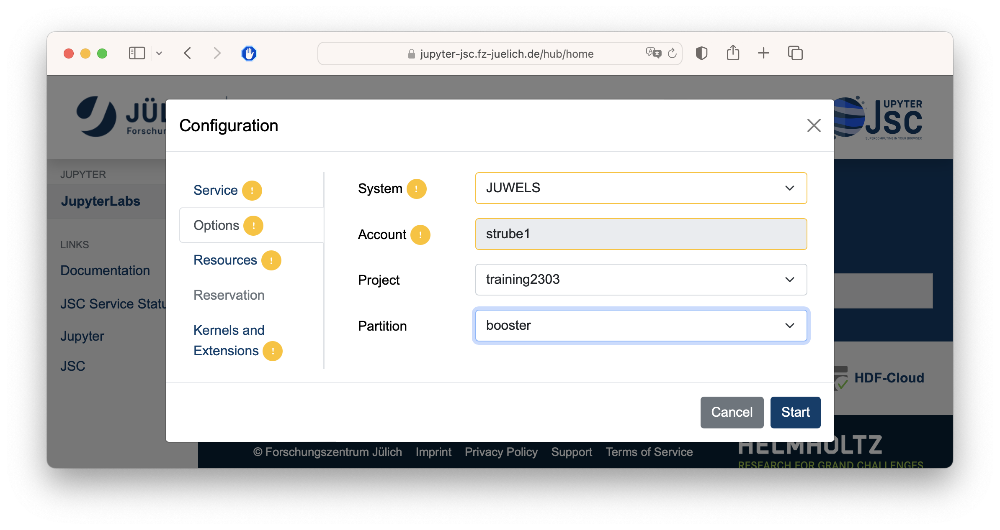
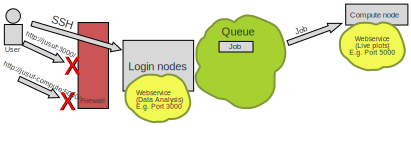
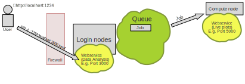
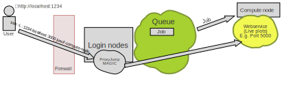
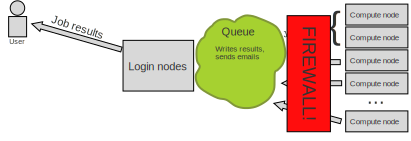

Getting Started with AI on Supercomputers
Alexandre Strube // Sabrina Benassou
February 28, 2023
Communication:

Goals for this course:
- Make sure you know how to access and use our machines
- Distribute your ML workload.
- Important: This is NOT a basic AI course

Team:


Schedule for day 1
| Time | Title |
|---|---|
| 09:00 - 09:15 | Welcome |
| 09:15 - 10:00 | Introduction |
| 10:00 - 10:30 | Judoor, Keys |
| 10:30 - 11:00 | SSH, Jupyter, VS Code |
| 11:00 - 12:00 | Running services on the login and compute nodes |
| 12:00 - 13:00 | Sync (everyone should be at the same point) |
Jülich Supercomputers

What is a supercomputer?
- Compute cluster: Many computers bound together locally
- Supercomputer: A damn lot of computers bound together locally
Anatomy of a supercomputer
- Login Nodes: Normal machines, for compilation, data transfer, scripting, etc. No GPUs.
- Compute Nodes: Guess what :-)
- High-speed, ultra-low-latency network
- Shared networked file systems
- Scratch file system accessible from compute nodes
- Key stats:
- Number of Nodes
- CPUs, Number of Cores, Single-core Performance
- RAM
- Network: Bandwidth, Latency
- Accelerators (e.g. GPUs)
JUWELS Booster Compute Nodes
- 936 Nodes
- AMD EPYC Rome 7402 CPU 2.7 GHz (2 × 24 cores x 2 SMT threads = 96 virtual cores/node)
- 512 GiB memory
- Network Mellanox HDR infiniband (FAST💨 and EXPENSIVE💸)
- 4x NVIDIA A100 with 40gb.
TL;DR: 89856 cores, 3744 GPUs, 468 TB RAM 💪
Way deeper technical info at Juwels Booster Overview
JUSUF
- 205 Nodes
- AMD EPYC Rome 7742 CPU 2.25 GHz (2 × 64 cores / node)
- 256 GiB memory
- 61 nodes with 4x NVIDIA V100 with 16gb.
TL;DR: Smaller than JUWELS Booster, but still packs a punch 🤜
Way deeper technical info at JUSUF Overview
How do I use a Supercomputer?
- Batch: For heavy compute, ML training
- Interactively: Jupyter
You don’t use the whole supercomputer
You submit jobs to a queue asking for resources

You don’t use the whole supercomputer
And get results back

You don’t use the whole supercomputer
You are just submitting jobs via the login node

You don’t use the whole supercomputer
You are just submitting jobs via the login node

You don’t use the whole supercomputer
You are just submitting jobs via the login node

You don’t use the whole supercomputer
- Your job(s) enter the queue, and wait for its turn
- When there are enough resources for that job, it runs

You don’t use the whole supercomputer
And get results back

Supercomputer Usage Model
- Using the the supercomputer means submitting a job to a batch system.
- No node-sharing. The smallest allocation for jobs is one compute node (4 GPUs).
- Maximum runtime of a job: 24h.
Recap:
- Login nodes are for submitting jobs, move files, compile, etc
- NOT FOR TRAINING NEURAL NETS
Recap:
- User submit jobs
- Job enters the queue
- When it can, it runs
- Sends results back to user
Connecting to JUWELS BOOSTER
Getting compute time
- Go to https://judoor.fz-juelich.de/projects/join/training2303
- Join the course project
training2303 - Sign the Usage Agreements (Video)
- Compute time allocation is based on compute projects. For every compute job, a compute project pays.
- Time is measured in core-hours. One hour of Juwels BOOSTER is 48 core-hours. One hour of Jusuf is 128 core-h.
- Example: Job runs for 8 hours on 64 nodes of Juwels BOOSTER: 8 * 64 * 48 = 24576 core-h!
Connecting to JUWELS BOOSTER and JUSUF
SSH
- SSH is a secure shell (terminal) connection to another computer
- You connect from your computer to the LOGIN NODE
- Security is given by public/private keys
- A connection to the supercomputer needs a
- Key,
- Configuration
- Key/IP address known to the supercomputer
SSH
Create key
$ ssh-keygen -a 100 -t ed25519 -f ~/.ssh/id_ed25519-JSC
Generating public/private ed25519 key pair.
Enter passphrase (empty for no passphrase):
Enter same passphrase again:
Your identification has been saved in /Users/strube1/.ssh/id_ed25519-JSC
Your public key has been saved in /Users/strube1/.ssh/id_ed25519-JSC.pub
The key fingerprint is:
SHA256:EGNNC1NTaN8fHwpfuZRPa50qXHmGcQjxp0JuU0ZA86U strube1@Strube-16
The keys randomart image is:
+--[ED25519 256]--+
| *++oo=o. . |
| . =+o .= o |
| .... o.E..o|
| . +.+o+B.|
| S =o.o+B|
| . o*.B+|
| . . = |
| o . |
| . |
+----[SHA256]-----+VSCode
- Download VScode: code.visualstudio.com
- Install it
- Install Remote Development Tools
- Install Remote: SSH
- On the local terminal, type
code
VSCode
Now with the remote explorer tab

SSH
Configure SSH session
SSH
Configure SSH session
Host jusuf
HostName jusuf.fz-juelich.de
User [MY_USERNAME]
IdentityFile ~/.ssh/id_ed25519-JSC
Host booster
HostName juwels-booster.fz-juelich.de
User [MY_USERNAME]
IdentityFile ~/.ssh/id_ed25519-JSCCopy contents to the config file and save it.
SSH
Jülich Supercomputing Centre restricts where you can login from
So we need to:
- Find our ip range
- Add the range and key to Judoor
SSH
Find your ip/name range
- Terminal:
curl ifconfig.me
(Ignore the % sign)
- Let’s keep this inside vscode:
code key.txtand paste the number you got
SSH
Find your ip/name range
- Browser: https://www.whatismyip.com
SSH
Find your ip/name range

- Let’s keep this inside vscode:
code key.txtand paste the number you got
SSH - Example:
93.199.55.160
- Go to VSCode and make it simpler, replace the 2nd
half with
0.0/16:93.199.0.0/16 - (because the last numbers change)
- Add a
from=""around it - So, it looks like this, now:
from="93.199.0.0/16" - Add a second magic number, with a comma:
,10.0.0.0/8🧙♀️ - I promise, the magic is worth it 🧝♂️
SSH - Example:
93.199.0.0/16
Copy your ssh key
- Terminal:
cat ~/.ssh/id_ed25519-JSC.pub - Paste this line at the same
key.txtwhich you just opened
SSH
Example: 93.199.0.0/16
- Put them together and copy again:
SSH

- Let’s add it on Judoor
- Do it for JUWELS, JUSUF and JUDAC with the same key
SSH
Add new key to Judoor

This might take some minutes
SSH: Exercise
That’s it! Give it a try (and answer yes)
$ ssh jusuf
The authenticity of host 'jusuf.fz-juelich.de (134.94.0.185)' cannot be established.
ED25519 key fingerprint is SHA256:ASeu9MJbkFx3kL1FWrysz6+paaznGenChgEkUW8nRQU.
This key is not known by any other names
Are you sure you want to continue connecting (yes/no/[fingerprint])? Yes
**************************************************************************
* Welcome to JUSUF *
**************************************************************************
...
...
strube1@jusuf ~ $ SSH: Exercise
Make sure you are connected to the supercomputer
# Create a shortcut for the project on the home folder
ln -s $PROJECT_training2303 ~/course
# Create a folder for myself
mkdir course/$USER
# Enter course folder and
cd ~/course/$USER
# Where am I?
pwd
# We well need those later
mkdir ~/course/$USER/.cache
mkdir ~/course/$USER/.config
mkdir ~/course/$USER/.fastai
ln -s ~/course/$USER/.cache $HOME/
ln -s ~/course/$USER/.config $HOME/
ln -s ~/course/$USER/.fastai $HOME/Working with the supercomputer’s software
- We have literally thousands of software packages, hand-compiled for the specifics of the supercomputer.
- Full list
- Detailed documentation
Software
Tool for finding
software: module spider
strube1$ module spider PyTorch
------------------------------------------------------------------------------------
PyTorch:
------------------------------------------------------------------------------------
Description:
Tensors and Dynamic neural networks in Python with strong GPU acceleration.
PyTorch is a deep learning framework that puts Python first.
Versions:
PyTorch/1.7.0-Python-3.8.5
PyTorch/1.8.1-Python-3.8.5
PyTorch/1.11-CUDA-11.5
PyTorch/1.12.0-CUDA-11.7
Other possible modules matches:
PyTorch-Geometric PyTorch-Lightning
...What do we have?
module avail (Inside hierarchy)
Module hierarchy
Stage (full collection of software of a given year)
Compiler
MPI
Module
Eg:
module load Stages/2023 GCC OpenMPI PyTorch
What do I need to load such software?
module spider Software/version
Example: PyTorch
Search for the software itself - it will suggest a version

Example: PyTorch
Search with the version - it will suggest the hierarchy

Example: PyTorch
(make sure you are still connected to JUSUF)
Oh noes! 🙈
Let’s bring Python together with PyTorch!
Example: PyTorch
Copy and paste these lines
# This command fails, as we have no proper python
python
# So, we load the correct modules...
module load Stages/2023
module load GCC OpenMPI Python PyTorch
# And we run a small test: import pytorch and ask its version
python -c "import torch ; print(torch.__version__)" Should look like this:
Python Modules
Some
of the python softwares are part of Python itself, or of other
softwares. Use “module key”
module key toml
The following modules match your search criteria: "toml"
------------------------------------------------------------------------------------
Jupyter: Jupyter/2020.2.5-Python-3.8.5, Jupyter/2021.3.1-Python-3.8.5, Jupyter/2021.3.2-Python-3.8.5, Jupyter/2022.3.3, Jupyter/2022.3.4
Project Jupyter exists to develop open-source software, open-standards, and services for interactive computing across dozens of programming languages.
PyQuil: PyQuil/3.0.1
PyQuil is a library for generating and executing Quil programs on the Rigetti Forest platform.
Python: Python/3.8.5, Python/3.9.6, Python/3.10.4
Python is a programming language that lets you work more quickly and integrate your systems more effectively.
------------------------------------------------------------------------------------VSCode
Editing files on the supercomputers

VSCode

VSCode
- You can have a terminal inside VSCode: Go to the menu View->Terminal
VSCode
From the ssh connection, navigate to your “course” folder and to the name you created earlier.
This is out working directory. We do everything here.
Demo code
Create a new
file “matrix.py” on VSCode on Jusuf
Paste this into the file:
How to run it on the login node
module load Stages/2023
module load GCC OpenMPI PyTorch
python matrix.pyBut that’s not what we want… 😒
So we send it to the queue!
HOW?🤔
SLURM 🤯
Simple Linux Utility for Resource Management
Slurm submission file
- Simple text file which describes what we want and how much of it, for how long, and what to do with the results
Slurm submission file example
code jusuf-matrix.sbatch
#!/bin/bash -x
#SBATCH --account=training2303 # Who pays?
#SBATCH --nodes=1 # How many compute nodes
#SBATCH --job-name=matrix-multiplication
#SBATCH --ntasks-per-node=1 # How many mpi processes/node
#SBATCH --cpus-per-task=1 # How many cpus per mpi proc
#SBATCH --output=output.%j # Where to write results
#SBATCH --error=error.%j
#SBATCH --time=00:01:00 # For how long can it run?
#SBATCH --partition=gpus # Machine partition
module Stages/2023
module load GCC OpenMPI PyTorch # Load the correct modules on the compute node(s)
srun python matrix.py # srun tells the supercomputer how to run itSubmitting a job: SBATCH
Are we there yet? 🐴
squeue --me
squeue --me
JOBID PARTITION NAME USER ST TIME NODES NODELIST(REASON)
412169 gpus matrix-m strube1 CF 0:02 1 jsfc013ST is status:
- PD (pending),
- CF(configuring),
- R (running),
- CG (completing)
Job is wrong, need to cancel
Check logs
By now you should have output and error log files on your directory. Check them!
# Notice that this number is the job id. It's different for every job
cat output.412169
cat error.412169 Or simply open it on VSCode!
Jupyter
Jupyter-JSC calls slurm, just the same as your job
When you are working on it, you are using compute node time
Yes, if you are just thinking and looking at the 📺, you are burning project time🤦♂️
It’s useful for small tests - not for full-fledged development
Jupyter
Pay attention to the partition - DON’T RUN IT ON THE LOGIN NODE!!!

Extra software, modules and kernels
You want that extra
software from pip….
Example: MLflow
Link: MLflow quickstart
- I won’t teach MLflow btw - it’s a demo on installing and running software
Example: MLflow
- Edit the file requirements.txt
- Add two lines at the end:
mlflow[extras] fastai- Run on the terminal:
./setup.sh
Example: MLflow
Activate the environment where MLFlow is with
source ./activate.sh
source ./activate.sh
The activation script must be sourced, otherwise the virtual environment will not work.
Setting vars
The following modules were not unloaded:
(Use "module --force purge" to unload all):
1) Stages/2023
The following have been reloaded with a version change:
1) HDF5/1.12.2-serial => HDF5/1.12.2
python
Python 3.10.4 (main, Oct 4 2022, 08:48:14) [GCC 11.3.0] on linux
Type "help", "copyright", "credits" or "license" for more information.
>>> import mlflow
>>> mlflow.__version__
'2.1.1'Example: MLFlow
- Let’s run it on the supercomputer!
- Open the MLFlow Quickstart
- Copy some example to a file mlflow-demo.py
Example: MLFlow
import os
from random import random, randint
from mlflow import log_metric, log_param, log_artifacts
if __name__ == "__main__":
# Log a parameter (key-value pair)
log_param("param1", randint(0, 100))
# Log a metric; metrics can be updated throughout the run
log_metric("foo", random())
log_metric("foo", random() + 1)
log_metric("foo", random() + 2)
# Log an artifact (output file)
if not os.path.exists("outputs"):
os.makedirs("outputs")
with open("outputs/test.txt", "w") as f:
f.write("hello world!")
log_artifacts("outputs")MLFlow: Submission file
Save as mlflow-demo.sbatch
#!/bin/bash -x
#SBATCH --account=training2303
#SBATCH --nodes=1
#SBATCH --job-name=mlflow-demo
#SBATCH --ntasks-per-node=1
#SBATCH --cpus-per-task=1
#SBATCH --output=output.%j
#SBATCH --error=err.%j
#SBATCH --time=00:10:00
#SBATCH --partition=gpus
# Make sure we are on the right directory
cd /p/home/jusers/$USER/jusuf/course/$USER
# This loads modules and python packages
source sc_venv_template/activate.sh
# Run the demo
srun python mlflow-demo.pyExample: MLFlow
Example: MLFlow
mlflow ui --port 3000
- Opens a connection on port 3000… OF THE SUPERCOMPUTER.
- We need to do something else: SSH PORT FORWARDING
Example: MLFlow

Port Forwarding

ssh -L :1234:localhost:3000 jusuf
Port forwarding demo:
- On local computer:
ssh -L :1234:localhost:3000 jusuf - On jusuf:
- On the browser: http://localhost:1234
But there’s more!
- Remember the magic? 🧙♂️
- Let’s use it now to access the compute nodes directly!
Proxy Jump
Accessing compute nodes directly
- If we need to access some ports on the compute nodes
- 
Proxy Jump - SSH Configuration
Type on your machine “code $HOME/.ssh/config” and paste
this at the end:
# -- Compute Nodes --
Host *.booster
User [ADD YOUR USERNAME HERE]
StrictHostKeyChecking no
IdentityFile ~/.ssh/id_ed25519-JSC
ProxyJump booster
Host *.jusuf
User [ADD YOUR USERNAME HERE]
StrictHostKeyChecking no
IdentityFile ~/.ssh/id_ed25519-JSC
ProxyJump jusuf
Proxy Jump: Connecting to a node
- Example: A service provides web interface on port 1234
On the supercomputer:
srun --time=00:05:00 \
--nodes=1 --ntasks=1 \
--partition=gpus \
--account training2303 \
--cpu_bind=none \
--pty /bin/bash -i
bash-4.4$ hostname # This is running on a compute node of the supercomputer
jsfc013
bash-4.4$ cd $HOME/course/$USER
bash-4.4$ source sc_venv_template/activate.sh
bash-4.4$ mlflow uiProxy Jump
On your machine:
ssh -L :3334:localhost:5000 jsfc013i.jusufMind the
iletter I added at the end of the hostnameNow you can access the service on your local browser at http://localhost:3334
A fisrt AI code!
- Let’s copy the demo from Fast.AI’s course (highly recommended)
Let’s train a pet classifier
- This is a minimal demo, to show some quirks of the supercomputer
FastAI’s demo image classifier
Save this as
fastai-demo.py
from fastai.vision.all import *
print("Downloading dataset...")
path = untar_data(URLs.PETS)/'images'
print("Finished downloading dataset")
def is_cat(x): return x[0].isupper()
dls = ImageDataLoaders.from_name_func(
path, get_image_files(path), valid_pct=0.2, seed=42,
label_func=is_cat, item_tfms=Resize(224))
print("On the login node, this will download resnet34")
learn = vision_learner(dls, resnet34, metrics=error_rate)
learn.fine_tune(1)Submission file for the classifier
Save this as
fastai-demo.sbatch
#!/bin/bash -x
#SBATCH --account=training2303
#SBATCH --mail-user=MYUSER@fz-juelich.de
#SBATCH --mail-type=ALL
#SBATCH --nodes=1
#SBATCH --job-name=matrix-multiplication
#SBATCH --ntasks-per-node=1
#SBATCH --cpus-per-task=1
#SBATCH --output=output.%j
#SBATCH --error=err.%j
#SBATCH --time=00:10:00
#SBATCH --partition=gpus
####SBATCH --gres=gpu:4
cd /p/home/jusers/$USER/jusuf/course/$USER
source sc_venv_template/activate.sh # Now we finally use the fastai module
srun python fastai-demo.py💥
What happened?
- Check the
error.${JOBID}file - Long error message which ends with
File "/p/software/jusuf/stages/2023/software/Python/3.10.4-GCCcore-11.3.0/lib/python3.10/urllib/request.py", line 1391, in https_open return self.do_open(http.client.HTTPSConnection, req, File "/p/software/jusuf/stages/2023/software/Python/3.10.4-GCCcore-11.3.0/lib/python3.10/urllib/request.py", line 1351, in do_open raise URLError(err) urllib.error.URLError: <urlopen error [Errno 111] Connection refused> srun: error: jsfc013: task 0: Exited with exit code 1
🤔…
What is it doing?
- This downloads the dataset:
- And this one downloads the pre-trained weights:
Remember, remember

Compute nodes have no internet connection
- But the login nodes do!
- So we download our dataset before…
On the login node:
- Comment out the line which does AI training:
- Call our code on the login node!
Downloading a dataset
$ source sc_venv_template/activate.sh
$ python fastai-demo.py
Downloading dataset...
|████████-------------------------------| 23.50% [190750720/811706944 00:08<00:26]
Downloading: "https://download.pytorch.org/models/resnet34-b627a593.pth" to /p/project/ccstao/cstao05/.cache/torch/hub/checkpoints/resnet34-b627a593.pth
100%|█████████████████████████████████████| 83.3M/83.3M [00:00<00:00, 266MB/s]Run it again on the compute nodes!
- Uncomment the line that does training:
- Submit the job!
Masoquistically waiting for the job to run?
(To exit, type CTRL-C)
Check output files
- You can seem them at VSCode
The activation script must be sourced, otherwise the virtual environment will not work. Setting vars Downloading dataset... Finished downloading dataset epoch train_loss valid_loss error_rate time Epoch 1/1 : |-----------------------------------| 0.00% [0/92 00:00<?] Epoch 1/1 : |-----------------------------------| 2.17% [2/92 00:14<10:35 1.7452] Epoch 1/1 : |█----------------------------------| 3.26% [3/92 00:14<07:01 1.6413] Epoch 1/1 : |██---------------------------------| 5.43% [5/92 00:15<04:36 1.6057] ... .... Epoch 1/1 : epoch train_loss valid_loss error_rate time 0 0.049855 0.021369 0.007442 00:42- 🎉
- 🥳
Day 1 recap
As of now, I expect you managed to:
- Stay awake for the most part of this morning 😴
- Have your own ssh keys 🗝️🔐
- A working ssh connection to the supercomputers 🖥️
- Can edit and transfer files via VSCode 📝
- Submit jobs and read results 📫
- Access services on the login and compute nodes 🧙♀️
- Is ready to make great code! 💪